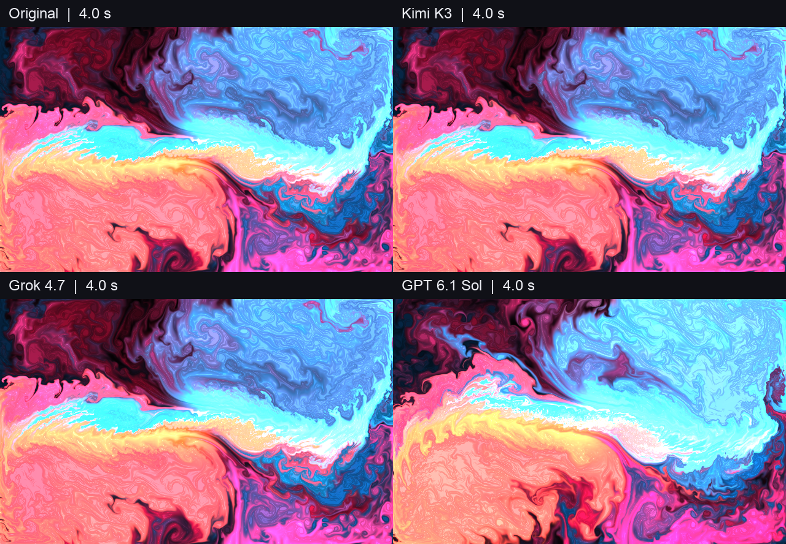

Independent visual reconstruction experiments. One case per folder; reproducible inputs, model outputs and honest limitations.

Source-readable pilot, one run per model. Not an official REA benchmark or general model leaderboard. No REA-off control.